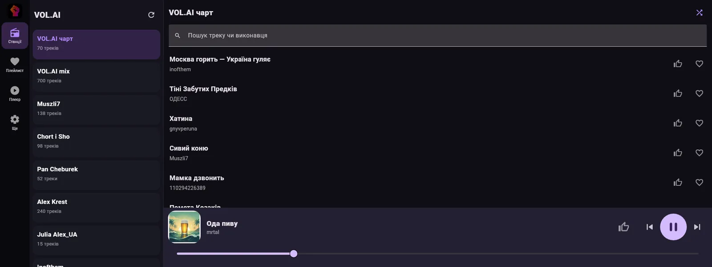
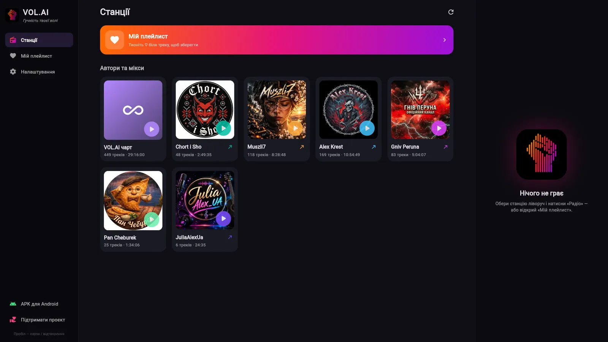
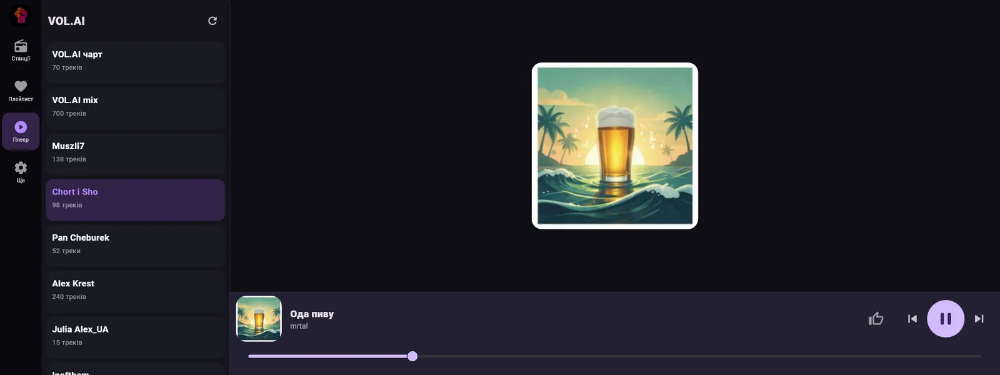
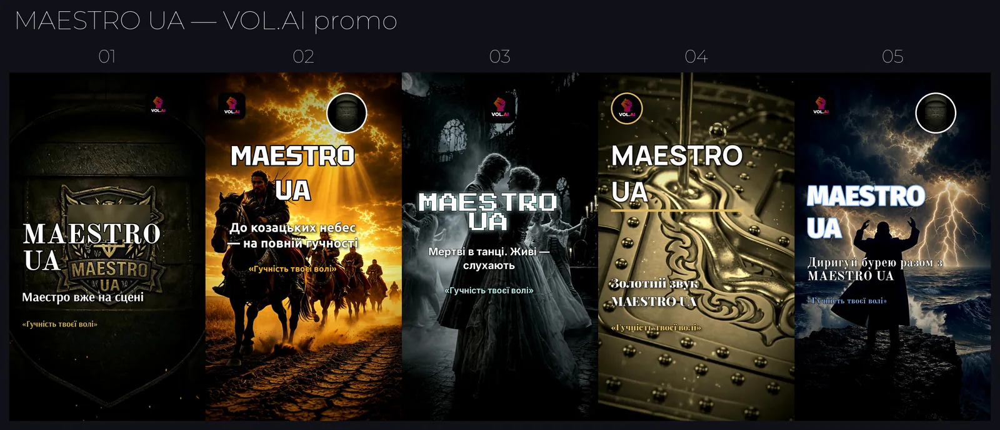

VOL.AI
Гучність твоєї воліThe volume of your will
Незалежне інтернет-радіо, яке збирає музику авторів Telegram-спільноти в один сервіс. Слухачі відкривають нових виконавців, а автори отримують власні станції.An independent internet radio that brings the music of a Telegram community's artists into one service. Listeners discover new artists, and artists get their own stations.

* Методика підрахунку й період вимірювання не уточнені.* Counting method and measurement period not specified.
Сцена для тих, кого ще не крутять на радіоA stage for artists radio doesn't play yet
Сотні треків губляться в стрічці Telegram. VOL.AI перетворює спільноту на радіостанцію, де кожен автор має свій ефір.Hundreds of tracks get lost in a Telegram feed. VOL.AI turns the community into a radio station where every artist has their own channel.
Радіо, яке хочеться слухатиRadio you actually want to hear
Станції виконавцівArtist stations
У кожного автора власна станція з його треками.Every artist gets a station with their own tracks.
Чарт VOL.AIVOL.AI chart
Найпопулярніші треки спільноти в одному потоці.The community's most popular tracks in one stream.
Спільний міксShared mix
Усі автори разом, коли хочеться різного.All artists together when you want variety.
Мій плейлистMy playlist
Зберігайте треки, які сподобались, у персональний плейлист.Save the tracks you like to a personal playlist.
Голос ефіруThe voice on air
Ведення ефіру озвучує клон мого голосу.Hosting is voiced by a clone of my own voice.
У машиніIn the car
Android Auto: станції й чарт на екрані авто.Android Auto: stations and the chart on the car screen.
Телефон, машина, браузерPhone, car, browser
Реальні знімки екрана застосунку, Android Auto і вебплеєра.Real screenshots of the app, Android Auto and the web player.

Android
Станції, чарт, мікс, плеєр і оновлення всередині застосунку.Stations, chart, mix, player and in-app updates.

Android Auto
Великі плитки станцій і плеєр з обкладинкою для екрана авто.Large station tiles and a cover-art player for the car screen.

ВебплеєрWeb player
Слухайте в браузері на комп'ютері чи телефоні.Listen in the browser on desktop or mobile.

Від треку в Telegram до ефіруFrom a Telegram track to the air
АвторArtist
Публікує трек у Telegram-спільноті.Posts a track in the Telegram community.
БотBot
Telegram-бот додає трек до каталогу станції.A Telegram bot adds the track to the station catalogue.
СерверServer
Сервер на Hetzner збирає станції, чарт і мікс.A Hetzner server builds the stations, chart and mix.
СлухачListener
Android, Android Auto або браузер.Android, Android Auto or the browser.
Обкладинки, ролики й іконки станційCovers, clips and station icons
Для станцій я роблю промоматеріали: серії обкладинок, вертикальні ролики й іконки для чарту та міксу.For the stations I make promo material: cover series, vertical clips and icons for the chart and the mix.

Ваша музика заслуговує на власну станціюYour music deserves its own station
Пишіть у Telegram, щоб підключитися до VOL.AI як автор.Message me on Telegram to join VOL.AI as an artist.
ПоштаEmail: vitaliymayboroda1991@gmail.com